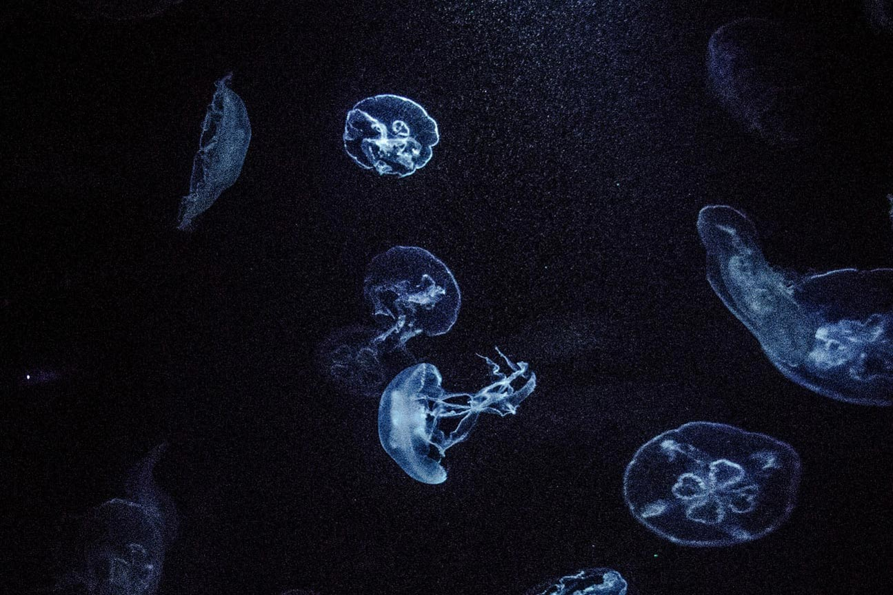
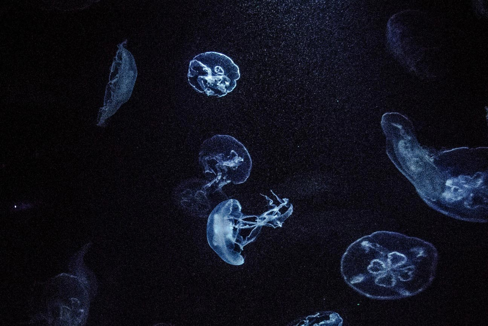

Tribute to Jellyfishes

 



Fascinating, elegant, and mysterious to watch in the water, take a jellyfish out of the water, and it becomes a much less fascinating blob. This is because jellyfish are about 95 percent water.
Lacking brains, blood, or even hearts, jellyfish are pretty simple critters. They are composed of three layers: an outer layer, the epidermis; a middle layer made of a thick, elastic, jelly-like substance called mesoglea; and an inner layer, called the gastrodermis. An elementary nervous system, or nerve net, allows jellyfish to smell, detect light, and respond to other stimuli. The simple digestive cavity of a jellyfish acts as both its stomach and intestine, with one opening for both the mouth and the anus.
These simple invertebrates are members of the phylum Cnidaria, which includes creatures such as sea anemones, sea whips, and corals. Like all members of the phylum, the body parts of a jellyfish radiate from a central axis. This “radial symmetry” allows jellyfish to detect and respond to food or danger from any direction.
Jellyfish have the ability to sting with their tentacles. While the severity of stings varies, in humans, most jellyfish stings result only in minor discomfort.